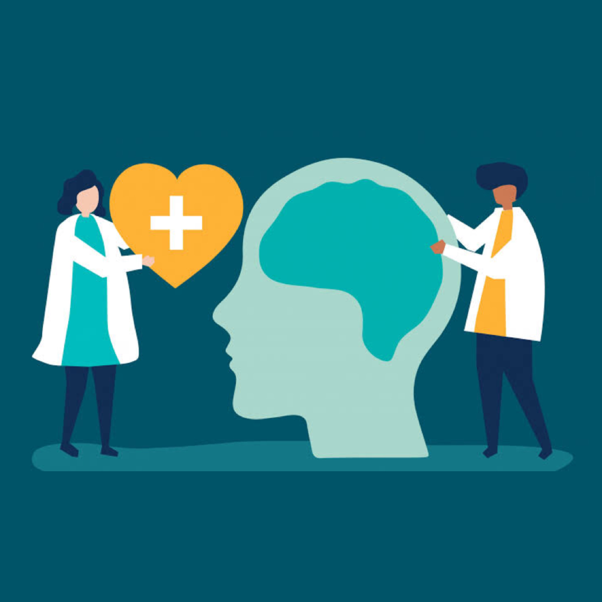
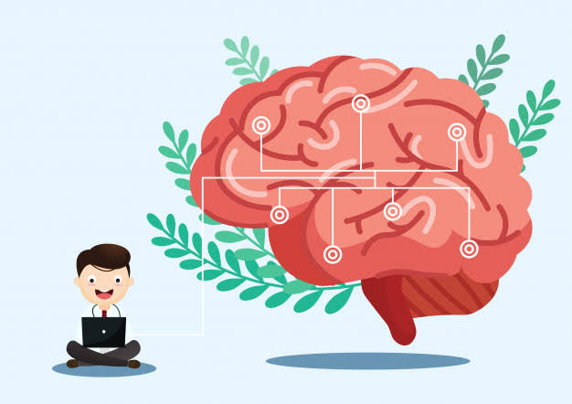
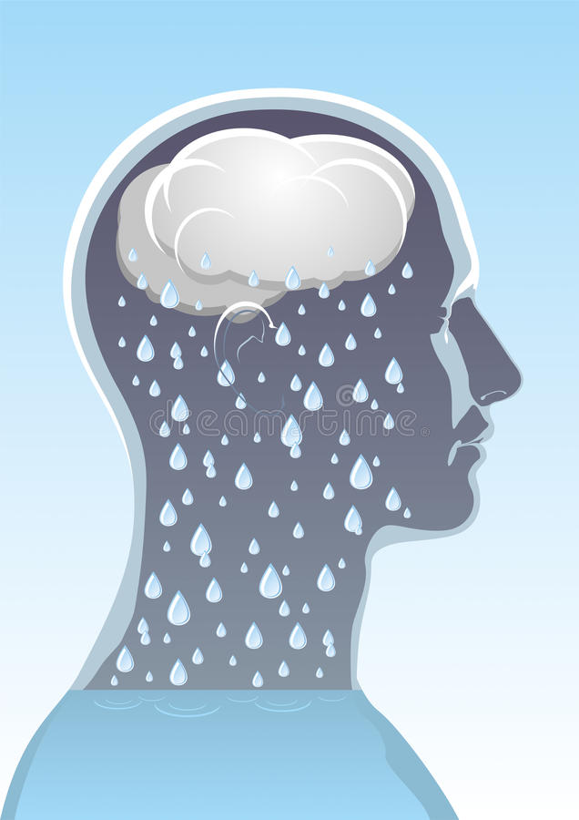
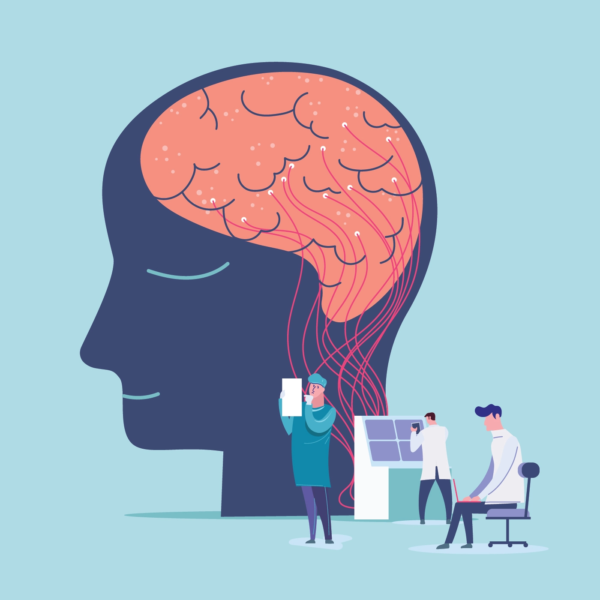

| home | trastorno de ansiedad social | trastorno depresivo mayor |
| Las enfermedades o trastornos mentales son afecciones que impactan su pensamiento, sentimientos, estado de ánimo y comportamiento. Pueden ser ocasionales o duraderas (crónicas). Pueden afectar su capacidad de relacionarse con los demás y funcionar cada día. |
| SÍNTOMAS | ||
|  |
Los signos y síntomas de la enfermedad mental pueden variar según el trastorno, las circunstancias y otros factores. Los síntomas de la enfermedad mental pueden afectar las emociones, los pensamientos y las conductas.
Algunos ejemplos de los signos y síntomas son los siguientes:
|
| CAUSAS | ||
Las enfermedades mentales, por lo general, se consideran originadas a partir de una variedad de factores genéticos y ambientales:
|  |
| FACTORES DE RIESGO | ||
|  |
Ciertos factores pueden aumentar el riesgo de desarrollar una enfermedad mental, incluidos los siguientes:
Los efectos de la enfermedad mental pueden ser temporales o duraderos. También es posible sufrir más de un trastorno de salud mental al mismo tiempo. Por ejemplo, puedes tener depresión y un trastorno vinculado al consumo de sustancias. |
| COMPLICACIONES | TIPOS | ||||||
La enfermedad mental es una de las principales causas de discapacidad. Si no se trata, la enfermedad mental puede ocasionar graves problemas emocionales, físicos y conductuales. Las complicaciones que, en ocasiones, se asocian a la enfermedad mental comprenden las siguientes:
|
Existen muchos tipos diferentes de trastornos mentales. Algunos comunes incluyen:
|
| PREVENCIÓN | ||
No existe una forma de prevenir la enfermedad mental. Sin embargo, si sufres una enfermedad mental, tomar medidas para controlar el estrés, aumentar tu resistencia y levantar tu autoestima pueden ayudar a controlar los síntomas. Toma estas medidas:
|
 |
| TRATAMIENTO | ||
|
El tratamiento depende del trastorno mental que usted tenga y qué tan grave sea. Junto a su proveedor trabajarán en un plan de tratamiento solo para usted. Por lo general, implica algún tipo de terapia. También puede tomar medicamentos. Algunas personas también necesitan apoyo social y educación para manejar su afección.
En algunos casos, es posible que necesite un tratamiento más intensivo. Si su enfermedad mental es grave o tiene riesgo de hacerse daño a usted o a alguien más, es posible que deba ir a un hospital psiquiátrico. En el hospital, recibirá consejería, discusiones grupales y actividades con profesionales de salud mental y otros pacientes. |